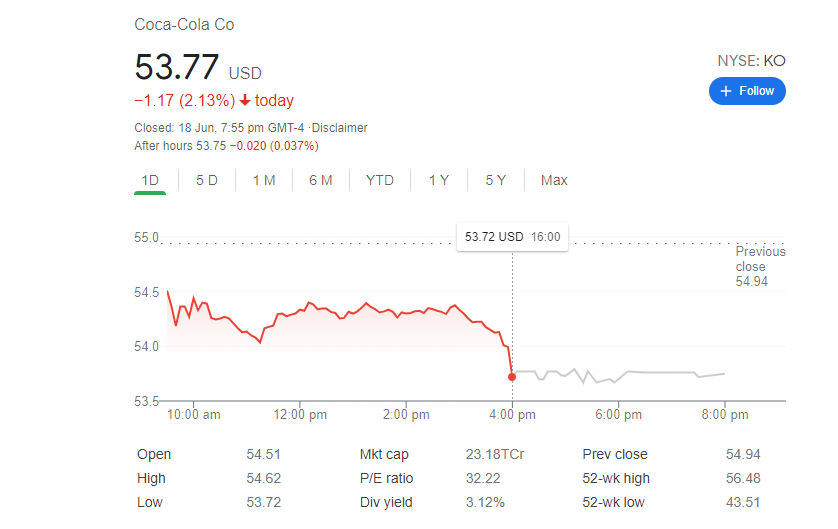

.png)
ഈ അടുത്ത ദിവസമാണ് ഫുട്ബോൾ ഇതിഹാസം ക്രിസ്ത്യാനോ റൊണാൾഡോ ചെയ്തൊരു പ്രവർത്തി കൊക്ക-കോള എന്നോരു ലോകത്തിലെ തെന്നെ ഒരു വൻകിട ബഹുരാജ്യ ബിസ്സിനെസ്സ് കമ്പനിക്ക് 500കോടി US ഡോളർ നഷ്ടപ്പെടാൻ കാരണമായെന്ന് നമ്മളറിഞ്ഞതാണ്. അതിന്റെ സത്യാവസ്ഥയും എന്ത് കാരണത്താലാണ് ഇങ്ങനെ സംഭവിച്ചതെന്നുമാണ് ഇന്ന് നമ്മൾ വീക്ഷിക്കുന്നത്.
കൊക്ക-കോള നമുക്കെല്ലാവർക്കും സുപർജിതമായൊരു ബ്രാൻഡ് തെന്നെയാണ്.വെറും മധുര വെള്ളം വിറ്റിട്ടാണ് ഇവർ ഈ ഒരു സാമ്പ്രാജ്യം കെട്ടിപൊക്കിയത്. 2005 'Reed Montague' എന്നൊരു സയന്റിസ്റ് എന്തുകൊണ്ടാണ് കൊക്ക-കോള 'പെപ്സിയക്കാൾ' കൂടുതൽ ജനങ്ങൾ ഇഷ്ടപെടുന്നതെന്നറിയാൻ ഒരു എസ്പെരിമെന്റ് നടത്തി. അതിൽ ആദ്യം കൊക്ക-കോളയും പെപ്സിയും ലേബൽ ഒഴിവാക്കി ആളുകൾക്ക്ക്കു കൊടുത്തു പിന്നീട് രണ്ടിനും അതാത് ലേബൽ കൊടുത്തും പിന്നീട് രണ്ടും അങ്ങോട്ടും ഇങ്ങോട്ടും മാറ്റിയും കൊടുത്തു.ഇതെല്ലാം ചെയ്യുമ്പോഴും ഇവരെയെല്ലാം ഒരു ഹെഡ് സ്കെന്നെർ വഴി സ്കാൻ ചെയ്യുകയും ചെയ്തു. അദ്യത്തെ പരീക്ഷണത്തിൽ ആളുകൾക്ക് രണ്ടും ഒരുപോലെയാണ് ടേസ്റ്റ് തോന്നിയത്.സ്കാനറിലും ഒരു ഡിഫറൻസും കാണിച്ചിട്ടില്ല. രണ്ടാമത്തെ സ്കെനിൽ കൊക്ക-കോള കൊടികുന്ന ആളുടെ തലയിൽ ഒരു പ്രത്യേക തരാം സാംദോഷത്തിന്റെ സിഗ്നൽ കാണുകയും കൊക്ക-കോള അവർക്കു നല്ല രുചിയുള്ളതായി തോന്നുകയും ചെയ്തു.
മൂന്നാമത്തെ പരീക്ഷണത്തിൽ കൊക്ക-കോളയുടെ ലേബൽ ഒട്ടിച്ച പെപ്സി വെള്ളമാണ് അവർക്കു കൂടുതൽ രുചിയുള്ളതായി തോന്നിയത്.കൂടാതെ തെന്നെ അവരുടെ ബ്രൈനിൽ ആ സിഗ്നൽ കാണുകയും ചെയ്തു.
എങ്ങനെ ഒരു പരീക്ഷണത്തിൽ നിന്നാണ് അവർ ഉറപ്പിച്ചത് അതായത് കൊക്ക-കോളയുടെ ടെസ്റ്റിൽ അല്ല അവരുടെ മാർക്കറ്റിംഗ് രീതിയിലാണ് ജനങ്ങൾ വീഴുന്നത്.
കൊക്ക-കോളയുടെ മാർക്കറ്റിംഗ് രീതി വളരെ എളുപ്പമാണ്. ഒരു രാജ്യത്തു അവർ ബിസിനസ് വളർത്തുന്നതിന് ആദ്യം ആ രാജ്യത്തെ വീക്നെസ് മനസിലാക്കുന്നു എന്നിട്ടു അതിനെയാണ് അവർ പരസ്യം ചെയ്യുക. ഉദാഹരണത്തിന് ഇന്ത്യയിൽ തെന്നെ കൊക്ക-കോളയെ മാർക്കറ്റ് ചെയ്യുവാൻ അവർ തിരഞ്ഞെടുത്തത് ക്രിക്കറ്റ് ആയിരുന്നു കാരണം ഇന്ത്യ ഒരു ഭോഹു സ്വര രാജ്യമായത് കൊണ്ട് ക്രിക്കറ്റ് ഒഴികെ മറ്റൊനും അവർക്കു മാർക്കറ്റ് ചെയ്യാൻ കിട്ടിയില്ല. പക്ഷെ ക്രിക്കറ്റിൽ അവർ വലിയ വിജയം കാണുകയും ചെയ്തു. ഇതിനു ശേഷമാണ് പല കമ്പനികളും ക്രിക്കറ്റിനെയും ക്രിക്കറ്റ് താരങ്ങളെയും അവരുടെ സ്പോൺസർ ആക്കുവാൻ തുടങ്ങിയത്.
സ്പോർട്സ് ആയിരിന്നു കൊക്ക-കോളയുടെ മെയിൻ കച്ചവട മാർക്കറ്റ്.പലതരം ചിലവേറിയ സ്പോർട്സിനും ഇവന്റസിനും കൊക്ക-കോള സ്പോൺസർ ചെയ്യാറും ഉണ്ട്. അതുപോലെ തെന്നെയാണ് അവർ ഇപ്രാവിശ്യത്തെ UEFA EURO കപ്പ് സ്പോൺസർ ചെയ്യുന്നത്. 20-06-2021 നുള്ള കളിയുടെ മുന്നോടിയായിട്ടാണ് റൊണാൾഡോ പ്രസ് മീറ്റിംഗിൽ ചേരുന്നത്. മുന്നിൽ തെന്നെ UEFA യുടെ മെയിൻ സ്പോൺസർ ആയ കൊക്ക-കോളയുടെ ബോട്ടിലും ഇരിപ്പുണ്ട്. കായികതാരത്തിനു ദാഹമകറ്റാൻ മാത്രമല്ല അതൊരു പരസ്യ രീതി കൂടെയാണ്. പക്ഷെ റൊണാൾഡോ ചെയ്തെത് കുറച്ചു കഠിനമാണ്, തന്റെ മുന്നിലിരിക്കുന്ന രണ്ടു കുപ്പി കോക്ക് ഒഴിവാക്കിയത് പോരാതെ തന്റെ മിനറൽ വാട്ടറിന്റെ കുപ്പി മാധ്യമങ്ങളിലേക് പൊക്കി കാണിക്കുകയും ചെയ്തു. ഇ പ്രക്രിയയാണ് കൊക്ക-കോള എന്ന ഭീമന് നാലു ബില്യൺ US ഡോളർ നഷ്ടമാവാൻ കാരണമായത്.
നാലു ബില്യൺ US ഡോളർ അതായത് ഏകദേശം 2,96,57,64,00,000.00 ഇന്ത്യൻ രുപ കൊക്ക-കോളകു നഷ്ടമായതെന്ന് പറയുന്നത് ശെരിതെന്നെയാണ് പക്ഷെ അത് ജനങ്ങൾ കൊക്ക-കോള ഉപേഷിച്ചത് കൊണ്ടല്ല, പകരം സ്റ്റോക്ക്മാർക്കറ്റിൽ ഉണ്ടായിരുന്ന അവരുടെ ഷെയർ കൂട്ടത്തോടെ ജനങ്ങൾ വിട്ടൊഴിവാക്കിയത് കൊണ്ടാണ്. ഇതിനു കാരണം ഒരു പക്ഷെ ജനങ്ങൾ കൊക്ക-കോള ഉപേഷിക്കുമോ എന്നാ പേടിത്തന്നെയാവാം.
.png)
ഇപ്പോളാണ് ശെരിക്കും ഒരു ഇൻഫ്ലുൻസറുടെ പവർ നമ്മൾ അറിയുന്നത്. ക്രിസ്ത്യാനോ റൊണാൾഡോ ഒരു ഫുട്ബോൾ ഇതിഹാസം എന്നതിനും ഉപരി ഒരു ഇൻഫ്ലുൻസർ കൂടെയാണ്. ഇൻസ്റ്റാഗ്രാമിൽ മാത്രം അദ്ദേഹത്തിന് 301 മില്യൺ ഫോള്ളോവെർസ് ആണുള്ളത്. ഇൻസ്റ്റാഗ്രാമിൽ ഏറ്റവും കൂടുതൽ ഫോള്ളോവെർസ് ഉള്ളതും റൊണാൾഡോക്ക് തെന്നയാണ്. സോഷ്യൽ മീഡിയ ഇൻഫ്ലുൻസർ ആകുവാൻ ആഗ്രഹിക്കുന്ന അളന്നു നിങ്ങളെങ്കിൽ ഈ കാലഘട്ടം നിങ്ങളുടേത് തെന്നെയാണ്.
ഇനി നിങ്ങളൊരു ബിസിനസ് ചെയ്യുന്ന ആളാണെങ്കിൽ നിങ്ങളുടെ ബിസിനസ് പരസ്യം ചെയ്യുന്നത്തിനേക്കാൾ എത്രയോ എഫക്റ്റീവാണ് ഒരു സോഷ്യൽ മീഡിയ ഇൻഫ്ലുൻസറെ വെച്ച് നിങ്ങളുടെ ബിസിനസ് പ്രൊമോട്ട് ചെയ്യുന്നത്. കാരണം പരസ്യം ചെയ്യുമ്പോൾ അത് അത്രയും ക്ലിയർ ആയിരിക്കണം പക്ഷെ നിങ്ങളൊരു സോഷ്യൽ മീഡിയ ഇൻഫ്ലുൻസറെ വെച്ച് പ്രൊമോട്ട് ചെയ്യുമ്പോൾ അവരുടെ ആരാധകരാണ് പിന്നീട് നിങ്ങൾക്ക് കസ്റ്റമർ ആയി വരുന്നത്.